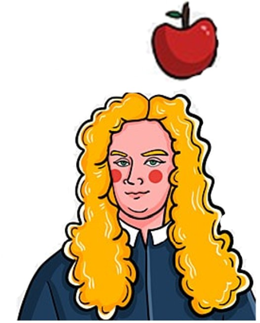

Hello, welcome to my homepage!
I'm a PhD student from the College of Information Sciences and Technology at the Pennsylvania State University. I'm super lucky to be advised by my best advisor Prof. Honavar.
I obtained my Bachelor's from HeFei University of Technology (HFUT) and my Master's degree from the University of Science and Technology (USTC), respectively. After that, I worked as a Machine Learning Engineer in Singapore for approximately two years. In January 2021, I decided to pursue my Ph.D. and returned to campus. I generally use the name `Xiaoying Ren' in my research and daily life for its simplicity.
My current project focus on building a conversational system for diagnosis assistance(e.g., lab test order, patient matching, diagnosis prediction) with the collaboration of medical school in PSU.
Research Interests: Machine Learning for Healthcare
My scientific goal is to advance the integration of machine learning into clinical practice by designing clinical AI systems that are informative, interactive, and affordable. My current research centers around narrowing the gaps between Data (Electronic Health Records (EHR) Data), Model (Continual Learning from Multi-modality Data), and Application (Interactive Conversational System for Lab Test Query and Diagnosis Assistance).
-
Representation Learning for EHR Data: Heterogeneity and Irregularity:
- Representation Learing with Heteregeneous Data, e.g., tabualr data. (ICML 24, In-submission Survey)
- Representation Learing with Irregular Longitidinal Data. (AAAI-24)
- Continual Learning with Multi-modality Data:
-
Clinical Large Language Models (LLMs) for Diagnosis Assistance:
- Towards Human-centered Clinical Foundation Model for Diagnosis Prediction (arxiv).
- Clinical Foundation Models under Cost Pressure (In-submission)
Research
In Submission & Under-Review:
-
DiaLLMs: Advancing Clinical Diagnosis Prediction with Foundation Models through Planning and Reasoning.[PDF]
Weijieying Ren, Tianxiang Zhao, Yuqing Huang, Vasant G Honavar
-
Survey of Deep Learning within Tabular Data: Foundations, Challenges, Advances and Future
Directions.[PDF]
Weijieying Ren, Tianxiang Zhao, Vasant G Honavar
-
Read, Diagnose and Chat: Towards Explainable and Interactive LLMs-Augmented Depression
Detection in Social Media.[PDF]
Wei Qin, Zetong Chen, Lei Wang, Yunshi Lan, Weijieying Ren, Richang Hong.
Publications:
-
TabLog: Test-Time Adaptation for Tabular Data Using Logic Rules. [PDF]
Weijieying Ren, Xiaoting Li, Huiyuan Chen, Vineeth Mohan, Zhuoyi Wang, Mahaweta Das, Vasant G Honavar.
The Forty-first International Conference on Machine Learning. (ICML-2024) -
Inducing Clusters Deep Kernel Gaussian Process for Longitudinal Data.[PDF]
Junjie Liang, Weijieying Ren, Hanifi Sahar, Vasant G Honavar.
The 38th Annual AAAI Conference on Artificial Intelligence. (AAAI-2024) -
EsaCL: An Efficient Continual Learning Algorithm.[PDF]
Weijieying Ren, Vasant G Honavar.
In Proceedings of the SIAM International Conference on Data Mining. (SDM-2024). -
Gradient-aware logit adjustment loss for long-tailed classifier.[PDF]
Fan Zhang, Wei Qin, Weijieying Ren, Lei Wang, Zetong Chen, Richang Hong.
2024 IEEE International Conference on Acoustics, Speech and Signal Processing. (ICASSP-2024) -
T-SaS: Toward shift-aware dynamic adaptation for streaming data.[PDF]
Weijieying Ren, Tianxiang Zhao, Wei Qin, Kunpeng Liu.
In Proceedings of the 32nd ACM International on Conference on Information and Knowledge Management. (CIKM-2023) -
Semi-supervised Drifted Stream Learning with Short Lookback.[PDF]
Weijieying Ren, Pengyang Wang, Xiaolin Liu, Charles E.Huges, etc.
In Proceedings of the 28th ACM SIGKDD Conference on Knowledge Discovery and Data Mining. (KDD-2022) -
Mitigating Popularity Bias in Recommendation with Unbalanced Interactions: A Gradient Perspective.[PDF]
Weijieying Ren*, Lei Wang*, Kunpeng Liu, Ruocheng Guo, Ee-Peng Lim, etc. (* Equal Contribution)
In Proceedings of 22nd ICDM IEEE International Conference on Data Mining. (ICDM-2022) -
Cross-Topic Rumor Detection using Topic-Mixtures.[PDF]
Weijieying(Xiaoying) Ren, Jing Jiang, Ling Min Serena Khoo, Hai Leong Chieu. The 16th Conference of the European Chapter of the Association for Computational Linguistics. (EACL-2021) -
Unsupervised Image Super-Resolution with an Indirect Supervised Path[PDF]
Zhen Han, Enyan Dai, Xu Jia, Weijieying(Xiaoying) Ren, Shuaijun Chen, Chunjing Xu, Jianzhuang Liu, Qi Tian
The Conference on Computer Vision and Pattern Recognition Workshops. (CVPR 2019 workshop) -
Tracking and Forecasting Dynamics in Crowdfunding: A Basis-Synthesis Approach.[PDF]
Weijieying(Xiaoying) Ren, Linli Xu, Tianxiang Zhao, Chen Zhu, Junliang Guo, Enhong Chen.
In Proceedings of 22nd ICDM IEEE International Conference on Data Mining. (ICDM-2018) -
Enhancing Semantic Representations of Bilingual Word Embeddings with Syntactic Dependencies.[PDF]
Linli Xu, Wenjun Ouyang , Weijieying(Xiaoying) Ren , Yang Wang, Liang Jiang.
In Proceedings of the 27th International Joint Conference on Artificial Intelligence. (IJCAI-2018) -
Robust Mapping Learning for Multi-view Multi-label Classification with Missing Labels.[PDF]
Weijieying Ren, Lei Zhang, Bo Jiang, Zhefeng Wang, Guangming Guo, Guiquan Liu
Knowledge Science, Engineering and Management: 11th International Conference. (KSEM-2018)
Patent:
-
Interpretable Neural Network for Tabular data Classification (Submitted in 2023)
Weijieying Ren, Xiaoting Li, Huiyuan Chen, Yuzhong Chen, etc. -
System, Method, and Computer Program Product for Analysis and Adaptation of Machine Learning Models for Tabular Data (Submitted in 2023)
Weijieying Ren, Xiaoting Li, Huiyuan Chen, Yuzhong Chen, etc.
Intern Experience
- Amazon, Applied Scientist Intern, May-Aug, 2024
- Visa Research, Applied Scientist Intern, May-Aug, 2023
- Amazon AWS, Applied Scientist Intern, May-Aug, 2022
- Noah’s Ark Labs, Jan-June, 2019
Service
- PC member: AAAI 2021-2023, KDD 2023-2024, ACM MM 2023-2024, CIKM 2022-2024, Neurips 2023 (dataset and benchmark track), SDM 2023-2024, IJCAI 2023-2024
- External Reviewer: PAKDD 2023, WSDM 2023
- Reviewer: TOIS, IEEE Big Data, Neurips 2024
- Panelist in 1st Annual IST Alumni Symposium, PSU
- Session Chair on time series forecasting@SDM 2024
Award
- AnitaB.org Advancing Inclusion Scholarship 2024
- IST, SDM student travel award, 2024
- KDD, ICDM student travel award, 2022
- Sigspatial student volunteer award, 2021
- Global Digital Scholarship in USTC, 2017
- Scholarship in USTC, 2016-2017
- Excellent graduates in AnHui Province, 2015
- Excellent graduates in HFUT, 2015
- Scholarship in HFUT, 2012-2014
- National scholarship in HFUT, 2014
Misc
- I come from the Henan Province (河南, South of the Yellow River) In China, so I'm also a Magician of noddles 🍜. My unforgettable food is the Braised pork belly in Anhui, Soup with Pepper in Henan, Plum duck in Suzhou, a special cold beverage in Singapore and Braised noodles by my mom.